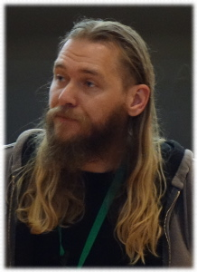
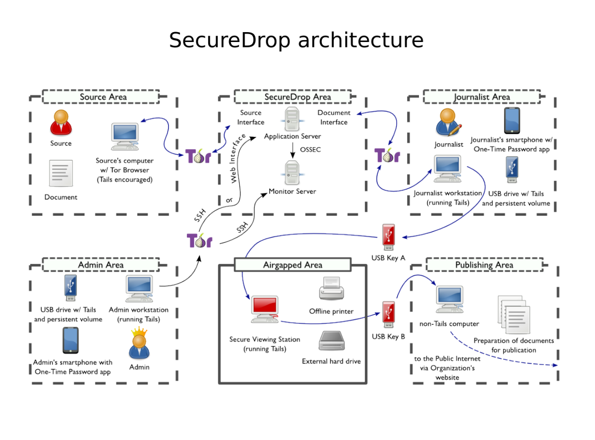

SecureDrop: anonymity and security for whistleblowers
The SecureDrop project is a free-software submission system that allows journalists to communicate with whistleblowers and to securely accept documents from them. SecureDrop received the Free Software Award for projects of social benefit on day one of LibrePlanet 2017; on day two, project member Conor Schaefer gave a talk on the project. In it, he looked at some of the history of the project, as well as where it stands today and where it may be headed in the future.
The project is run by the Freedom of the Press Foundation. The goal of SecureDrop is to ensure that journalists and their sources can communicate securely. The foundation has a number of different initiatives, including having three full-time trainers to help get new organizations set up with SecureDrop. That often entails training in related technologies, such as GnuPG and Tor.

Another initiative is Secure The News, which tracks and grades news organizations on their HTTPS adoption. Someone has made a Twitter bot for Secure The News that puts out tweets in realtime regarding changes that have been made to the sites. That has helped draw the attention of news organizations; some of the IT staff for those publications have even asked that Secure The News grade more harshly so that attention of higher-level managers can be focused on the problems.
The foundation is currently working on a non-public project to create a desktop application that implements Shamir's secret sharing algorithm to split keys into multiple parts. For a regular key, there is a "bus factor" of one; if the key lost, the data encrypted with it cannot be retrieved. In addition, whoever has the key can be pressured to reveal it when under investigation or crossing borders.
Secret sharing is a way to distribute the trust so that several different parts of the key need to be available in order to decrypt the data. One of the developers is using this when they cross borders to keep their data secret from the prying eyes of various governments. The developer securely communicates one part of the key to a colleague in the country where they are going and bring the other piece with them on the trip. They are literally unable to unlock those secrets at the border.
Some history
SecureDrop was originally started by Aaron Swartz and Kevin Poulsen under the name DeadDrop. After Swartz's death, DeadDrop was installed by The New Yorker magazine under the name Strongbox. The architecture of SecureDrop is largely the same as that of DeadDrop, but there are now nearly three dozen organizations using SecureDrop. The project is talking to 100 more at this point, Schaefer said.
The project started as a "labor of love" made by hackers but, given what it will be used for, it needed a security audit to look for flaws. In fact, each major release of SecureDrop has been audited, with the reports posted to its web site. The most recent audit (done in mid-2015 by iSEC Partners) found that the penetration testers were unable to break into SecureDrop, he said.
SecureDrop is a technology project, but it is solving a real-world problem for journalists and their sources. The project has gotten some attention over the last few years, including a detailed report in Columbia Journalism Review. Various journalists have credited SecureDrop with "significant and journalistically valuable" information getting to them.
In addition, The Intercept has recently started mentioning that SecureDrop was used in some of the articles it has published. Schaefer said the project is not pushing for news organizations to publicize its use but, instead, leaves it up to the publication to make that decision. For example, he pointed to an article on the US Central Intelligence Agency's venture capital arm funding for skincare products that facilitate DNA collection as one where SecureDrop was mentioned.
It has also been misunderstood or misused along the way. When The New Yorker went live with its instance, it received a large amount of poetry and cartoons, instead of the hot tips the magazine was hoping for. That has leveled off over the years, however.
Technical details
SecureDrop relies on a number of other projects to do some of the heavy lifting for security and anonymity. It uses Tor extensively, including using .onion services for the SecureDrop services, so that connections from sources never leave the Tor network. It uses GnuPG for symmetric encryption. It also uses the Tails live Linux distribution heavily and mandates its use in various roles in the system. The server side of SecureDrop runs on a custom Linux kernel that uses the grsecurity patches for added resistance to kernel vulnerabilities.

The SecureDrop architecture (seen above from Schaefer's slides, which have not yet been posted) is fairly complicated. Sources use Tor and the Tor browser—Tails is strongly recommended—to contact the .onion service run by the news organization. A code name will be generated for them and they will be able to log back in later to see if there was some kind of response from the organization. A different code name is also generated for the journalist, so that they can keep track of sources by "name" (e.g. "purple cube"). The SecureDrop server receives the documents provided and encrypts them in memory before storing them to disk.
The journalists get no notification that something has been posted, so they have to log in periodically to see if something new has arrived. Sending a notification might create a metadata trail that could be used to match the source to the information, Schaefer said. The journalist accesses the document interface of the server using the .onion service and downloads the encrypted documents to their workstation, which is running Tails.
There is an "air gapped" secure viewing station that is used to decrypt the documents. The journalist copies the encrypted documents from their workstation to a USB stick, then takes the stick to the secure viewing station, which is also running Tails. The files are copied to the viewing station, then decrypted. They can be printed to an offline printer and stored locally; for publication, though, the documents need to get into the normal publication flow. That is done by copying them to a separate USB stick, which is then taken to those systems, which are likely to be running something other than Tails.
One of the problem areas with this architecture, though, is security updates. There is a .deb repository for updates to the server, which works well. But Tails is specifically designed not to store much data between boots, so updating the journalist workstation, administrative workstation (which runs Tails and is used to administer the system), and secure viewing station, not to mention getting the word out to sources to update their Tails version, is much harder.
Schaefer noted two quotes from Edward Snowden in 2013 that pointed to this problem. The first said that "encryption works" and that strong crypto can be relied upon. But the second pointed out that it is often moot: "Unfortunately, endpoint security is so terrifically weak that NSA can frequently find ways around it." Having multiple endpoints in SecureDrop means that there are multiple places where things can go wrong. The project is looking at re-architecting things to address that problem.
Looking ahead
The project is evaluating a few different free-software tools to potentially be used in the next generation of SecureDrop. One of those is Qubes OS, which is an example of how operating systems should have been designed, Schaefer said. Your web browser should not have access to your entire disk so that a flaw in it can exfiltrate your SSH keys. Qubes OS has the concept of "disposable" virtual machines (VMs), which would be quite useful for SecureDrop. PDFs are a particularly problematic format for journalists; we are all admonished not to open PDFs from random people because of their danger, but journalists are effectively paid to open dodgy PDFs. Qubes OS has strong isolation by default and compromising it requires a hypervisor exploit. In effect, with Qubes OS you pay in RAM to get additional security benefits, Schaefer said.
Another similar project is Subgraph OS, which is a Debian-based system using the grsecurity patch set. It is younger and more lightweight than Qubes OS, but provides a number of security benefits, such as sandboxed applications (using seccomp BPF). It could be that the project ends up using both: running Subgraph OS VMs on Qubes OS.
For the server side, SecureDrop is looking at CoreOS, which has moved away from traditional Linux in some possibly useful ways. It has a minimal base, which reduces the attack surface and it has ways to do unattended upgrades. The container approach that CoreOS uses might allow SecureDrop to consolidate the two servers in its current architecture (one for running the .onion service, the other for intrusion detection, monitoring, and so forth) onto the same hardware.
The current architecture requires quite a few different systems (two servers, journalist and administrator workstations, and the secure viewing station), so combining those is worth exploring. There are concerns that removing the air gap might reduce security, but separate VMs, each running a hardened kernel, might actually be more secure due to the update problems as well as the potentially error-prone process of using the existing system. Schaefer encouraged those attending to get involved with the project to work on these and other tasks.
[I would like to thank the Linux Foundation for travel assistance to
Cambridge, MA for LibrePlanet.]
| Index entries for this article | |
|---|---|
| Security | Anonymity |
| Conference | LibrePlanet/2017 |